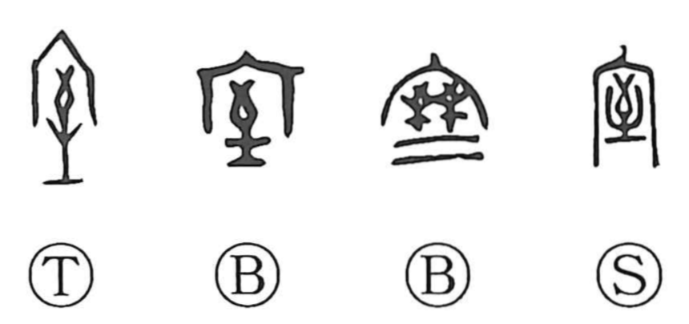

室

Kun: muro | On: shitsu
room ・ chamber ・ cellar ・ household ・ family
Explanation
室 combines 宀, the roof of an ancestral sanctuary, with 至. 至 shows an arrow reaching the ground. A sacred arrow was shot to determine and purify the site where an important building would stand. The roof marks the chamber erected at that chosen place.
室 first names the room where the ancestral spirit rests and receives worship. Early inscriptions name several such ritual chambers, and royal appointment ceremonies took place in the great room of the ancestral sanctuary.
From this sacred interior, 室 broadens to a room, dwelling, or house, then the household and family within it. Other uses name a containing space of any kind. 屋 and 臺 share the arrow-selected-site element, preserving a related way of establishing a building’s place.